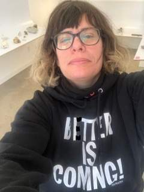

Lauren Schaffer
Lauren Schaffer is a multidisciplinary artist living in Toronto. Inspired by the limits of perception and research around the multi-species behaviour and urban environments; her work encompasses sculpture, installation, audio and video. She has received her undergraduate degree from the Nova Scotia College of Art and Design and her Master of Fine Arts degree from Concordia University. Her work has been exhibited across Canada and featured in Canadian Art, C Magazine and Espace Magazine. She was the recipient of the Grow Op Seed Award 2018, Best Experimental Film winner in the Toronto Urban Film Festival 2015. She doesn’t feel the need to exceed biology.